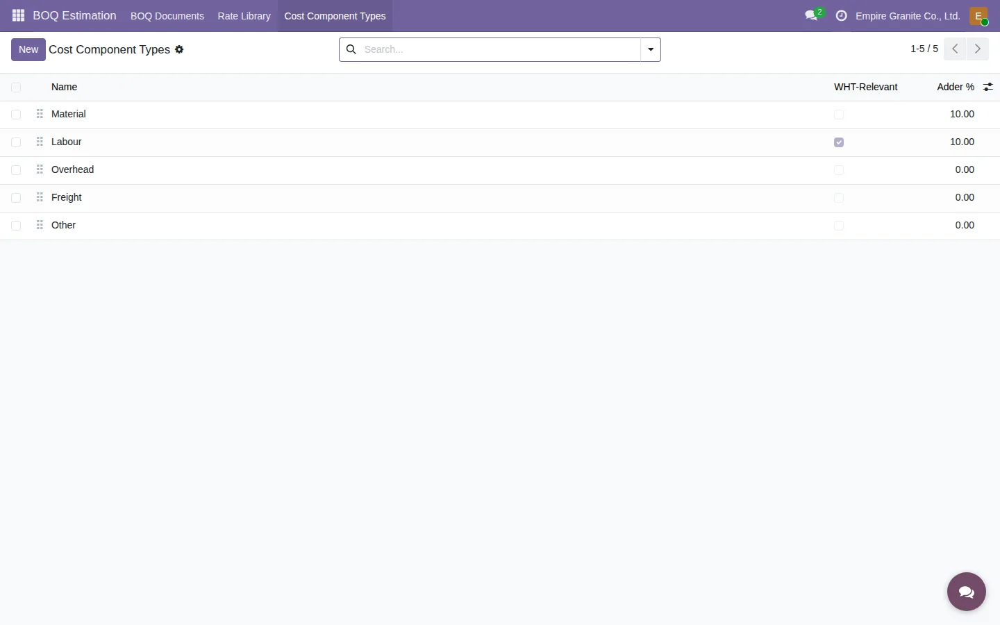
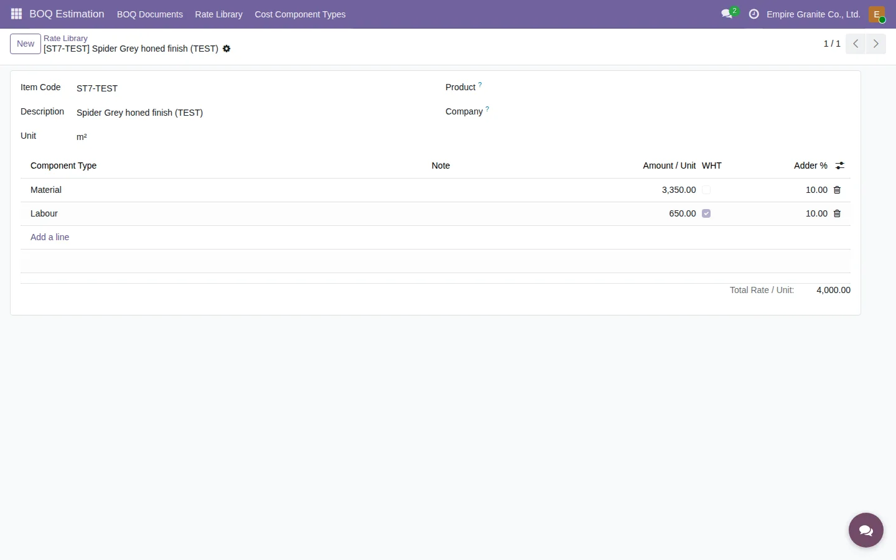
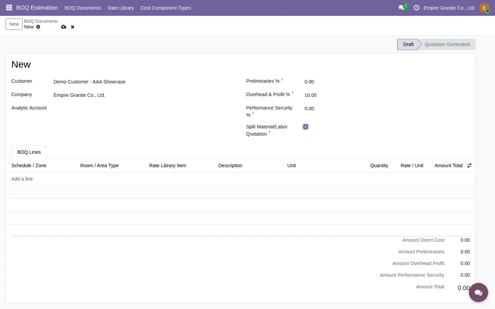
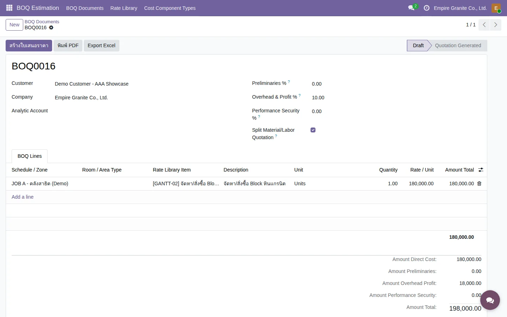
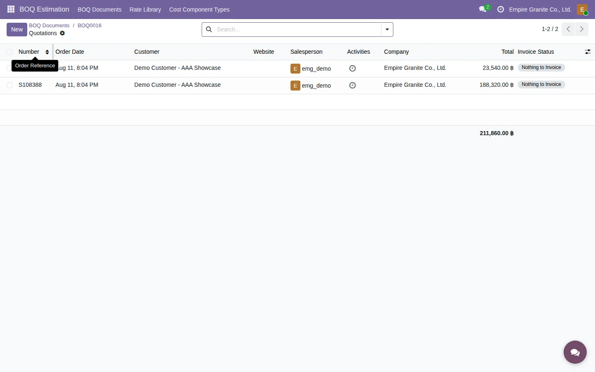
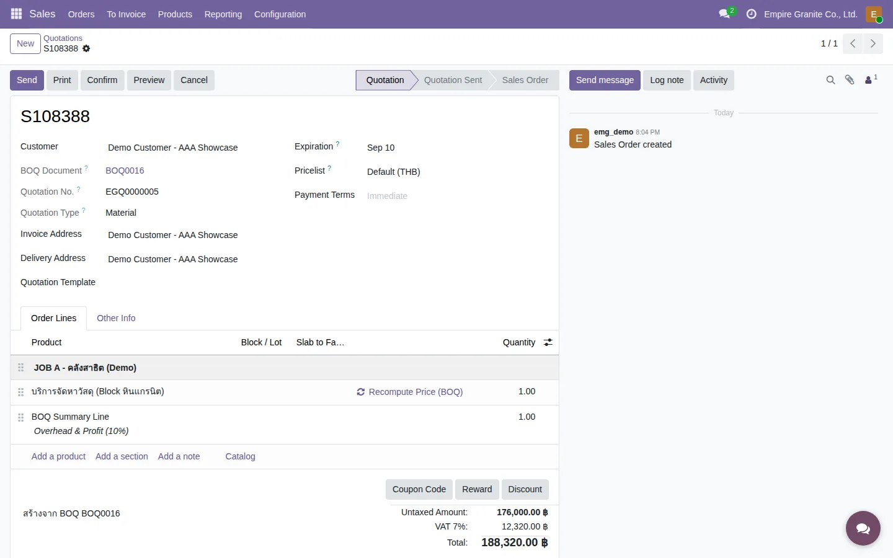
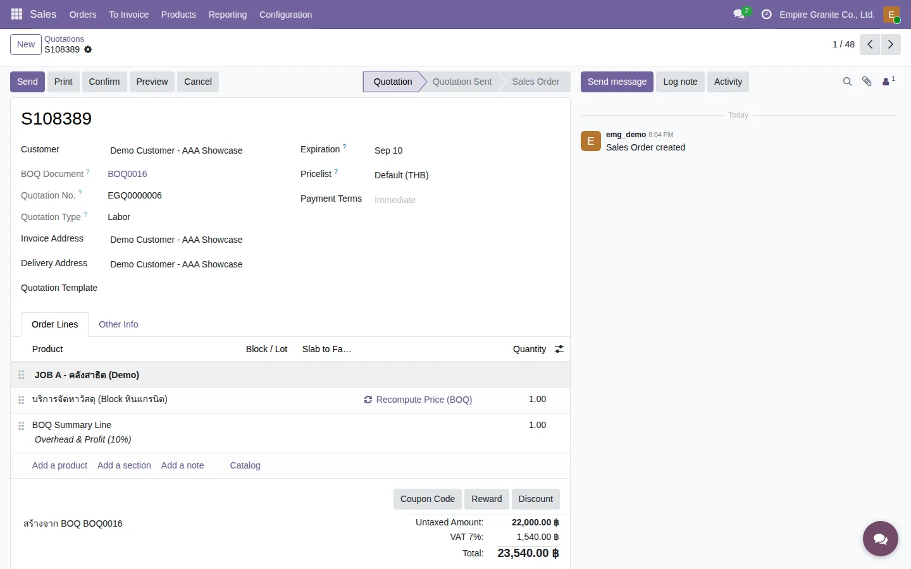
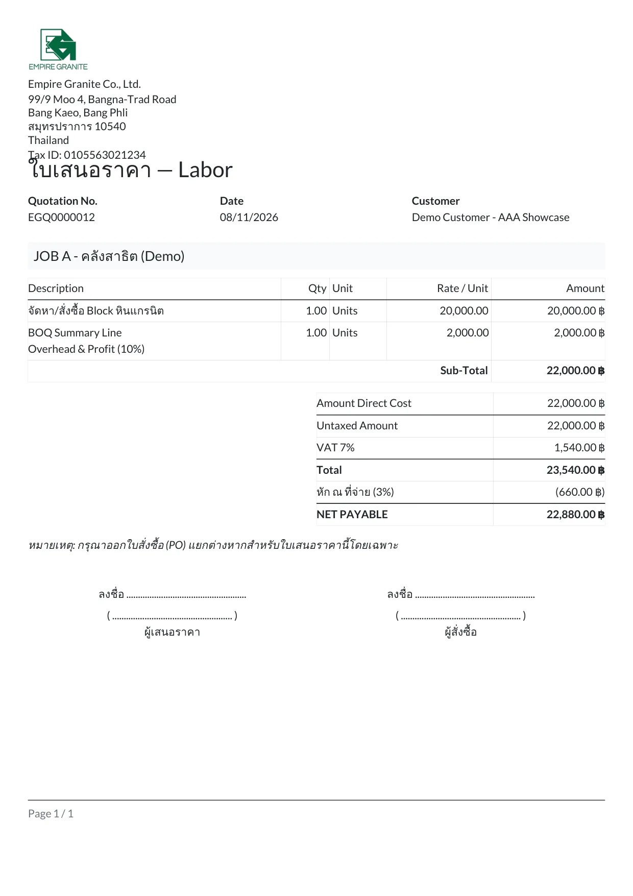

โจทย์
Rate Library เดิม (ดู บทที่ 22: BOQ Estimation) คำนวณราคาจาก "ต้นทุนวัสดุ" + "ค่าแรง" 2 ช่องตายตัวเท่านั้น — ถ้าธุรกิจมีต้นทุนอื่นเพิ่ม (ค่าขนส่ง, ค่าเช่าเครื่องมือ, ค่าธรรมเนียม) ไม่มีที่ให้ใส่ ต้องยัดรวมเข้าไปในช่องใดช่องหนึ่งแทน
นอกจากนี้ เอกสารเสนอราคาจริงของลูกค้าแยกเป็น 2 ใบ เสมอ — ใบวัสดุกับใบค่าแรง แต่ละใบคิด Overhead 10% + VAT 7% ของตัวเอง ระบบเดิมสร้างได้แค่ใบเดียวรวมกัน
บทนี้ครอบคลุมฟีเจอร์ใหม่ 3 ส่วนที่แก้ปัญหาทั้งคู่:
ส่วนที่ 1: Cost Component Types — เพิ่มหมวดต้นทุนได้เอง
ทุก Rate เดิมมี Component 2 ตัว (Material, Labour) — ตอนนี้เพิ่มได้อีก 3 ตัวมาให้ (Overhead, Freight, Other) และเพิ่มเองได้ไม่จำกัดจากเมนูใหม่

Adder % = markup % เฉพาะของหมวดนั้น (เช่น Overhead 10%) — ใช้คำนวณ "Overhead & Profit" ในใบเสนอราคาจริง: ระบบรวมยอดแต่ละ bucket × Adder % ของ bucket นั้นเอง แทนที่การพิมพ์ % เดียวตายตัวที่ระดับ BOQ Document เหมือนก่อนหน้านี้ — ดูส่วนที่ 4
แก้ไข/เพิ่มแถวใหม่ได้ตรงนี้เลย (list แบบ editable) — ลากไอคอนซ้ายมือเพื่อจัดลำดับการแสดงผล
ส่วนที่ 2: เพิ่ม Bucket ที่ 3+ ใน Rate Library

Total Rate / Unit ท้ายฟอร์มรวมทุก Component ให้อัตโนมัติ — Material Cost/Labour Cost (ช่องเดิมที่ list view ยังใช้อยู่) ยังคงถูกต้อง อ่านมาจาก Component "Material"/"Labour" โดยเฉพาะเท่านั้น ไม่ปนกับ Component ใหม่ที่เพิ่ม
ส่วนที่ 3: Split Material/Labor Quotation — สร้างใบเสนอราคา 2 ใบพร้อมกัน
ตัวอย่างจริงด้านล่างนี้ทดสอบผ่านหน้าเว็บจริง (emgdemo login) ไม่ใช่แค่ทดสอบผ่านโค้ด — สร้าง BOQ Document ทดสอบ (BOQ0016) ภายใต้ลูกค้าทดสอบ "Demo Customer - AAA Showcase" — เก็บไว้เป็นตัวอย่างอ้างอิง ไม่ใช่ข้อมูลลูกค้าจริง



EGQ0000005, แยกจากเลข S###### ของ Odoo) และ "Quotation Type: Material" บรรทัดสินค้าคิดเฉพาะส่วนที่ไม่ใช่ WHT-relevant (Material + Overhead + ฯลฯ ตามที่ตั้งไว้ในส่วนที่ 1)
EGQ0000006) "Quotation Type: Labor" คิดเฉพาะส่วน WHT-relevant (ปกติคือ Labour)
ผลจริงจากตัวอย่างนี้ (BOQ0016 → S108388/S108389)
Rate ที่ใช้ทดสอบ: GANTT-02 (Material 160,000 / Labour 20,000 / รวม 180,000 ต่อหน่วย)
| ใบ Material (S108388) | ใบ Labor (S108389) | |
|---|---|---|
| Quotation No. | EGQ0000005 | EGQ0000006 |
| ยอดสินค้า (Direct Cost) | 160,000.00 | 20,000.00 |
| Overhead & Profit (10%) | 16,000.00 | 2,000.00 |
| Untaxed Amount | 176,000.00 | 22,000.00 |
| VAT 7% | 12,320.00 | 1,540.00 |
| Total | 188,320.00 | 23,540.00 |
รวม 2 ใบ = 211,860.00 บาท — เทียบเท่ากับใบเดียวรวมในโหมดปกติเป๊ะ (ทดสอบแล้วว่าปิด Split แล้วสร้างใบเดียวได้ยอด 211,860.00 บาทเท่ากัน ไม่มีความคลาดเคลื่อน)
ส่วนที่ 4: พิมพ์ใบเสนอราคาจริง (PDF) พร้อมหัก ณ ที่จ่าย
จากใบ Sale Order ที่ได้ (ทั้งโหมด Split และไม่ Split) กดปุ่ม "พิมพ์ใบเสนอราคา (EGQ)" ที่แถบปุ่มด้านบนฟอร์ม — ได้ PDF หน้าตาแบบเอกสารจริง มี JOB subtotal, Overhead & Profit, VAT และท้ายเอกสารมีช่องเซ็นทั้งฝั่งผู้เสนอราคา/ผู้สั่งซื้อ พร้อมหมายเหตุให้ลูกค้าออก PO แยกต่างหาก
เฉพาะฝั่ง Labor จะมีบรรทัดเพิ่ม 2 บรรทัดท้ายสุด: หัก ณ ที่จ่าย (คำนวณจาก field ใหม่ WHT % บนฟอร์ม Sale Order เอง, default 3% แก้ได้ทุกใบ) และ NET PAYABLE (ยอดสุทธิหลังหัก) — ฝั่ง Material ไม่มี 2 บรรทัดนี้ เพราะปกติภาษีหัก ณ ที่จ่ายใช้กับค่าแรง/บริการเท่านั้น ไม่ใช่ค่าวัสดุ

2. เลขที่เอกสาร (เช่น EGQ0000005) เป็นเลขรันภายในเท่านั้น ยังไม่มีตัวต่อท้ายแบบ "/C" ที่เห็นในเอกสารจริงของลูกค้า (ยังไม่ทราบความหมายที่แน่ชัด — พักไว้ก่อน)
3. การแบ่งว่าอะไรไปฝั่ง Material/Labor ใช้ flag WHT-Relevant ของแต่ละ Component เป็นทางลัดที่เลือกใช้ตอนนี้ (แทนที่จะมี field แยกต่างหาก) — ถ้ามีหมวดต้นทุนที่ WHT-relevant แต่ควรอยู่ฝั่ง Material (หรือกลับกัน) ต้องมาคุยออกแบบเพิ่ม